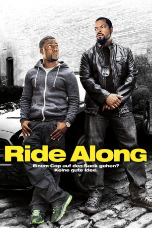
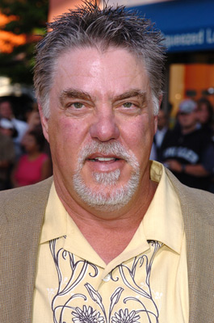
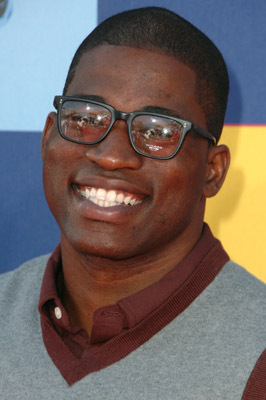
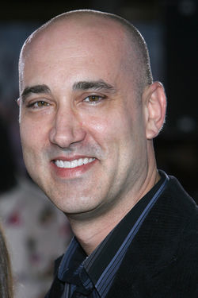
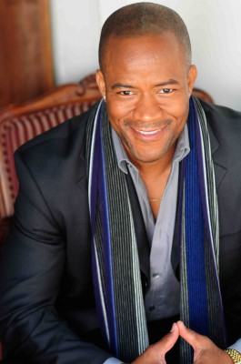
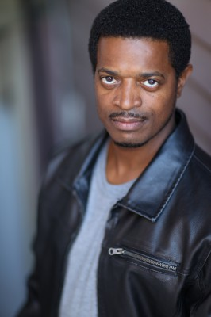
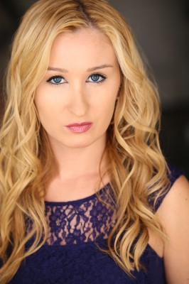

#5185 Ride Along
 
 IMDB-Wertung: 6.2 / 10
IMDB-Wertung: 6.2 / 10  Tomatometer: 18
Tomatometer: 18  Metascore: 0
Metascore: 0 
Drum prüfe der Bruder, bevor die Schwester sich bindet, ob der von ihr Erwählte auch wirklich einen guten Ehemann abgeben wird. Diesen Moment hat der an einer Schule als Sicherheits-Fachkraft tätige Ben bisher gescheut. Aber es führt wohl kein Weg an James vorbei. Und dieser hat eine besondere Prüfung vorgesehen: Ben soll den taffen Cop auf einer 24-Stunden-Schicht begleiten, damit James sich ein eigenes Bild von den Qualitäten des vorlauten Schwagers in spe machen kann. Es wird eine Schicht, die keiner der beiden so schnell vergessen wird…
Jahr: 2014
Dauer: 99 Minuten
FSK: 12
Land: USA Studio: Universal PicturesTonspuren: DTS - ,
Untertitel: Deutsch,
Auflösung: 1080p (1920x800) Größe: 5017 MB
Genre: Action, Komödie, Krimi, Liebe
Regisseur: Tim Story
Drehbuch: Oliver Kalkofe
Soundtrack:
Darsteller:
 Ice Cube als James Payton
Ice Cube als James Payton Kevin Hart als Ben Barber
Kevin Hart als Ben Barber John Leguizamo als Santiago
John Leguizamo als Santiago-  Bruce McGill als Lt. Brooks
- Tika Sumpter als Angela Payton
 Bryan Callen als Miggs
Bryan Callen als Miggs Laurence Fishburne als Omar
Laurence Fishburne als Omar- Dragos Bucur als Marko
- Gary Owen als Crazy Cody
 Jacob Latimore als Ramon
Jacob Latimore als Ramon- Jay Pharoah als Runflat
- Benjamin Flores Jr. als Morris the Kid
 Greg Rementer als Marko's Gunman
Greg Rementer als Marko's Gunman- John Kap als Bearded Biker
- Anona Tolar als Biker's Wife
- Lou Anne Cooper als Gun Shop Val
-  David Banner als Jay
 James Logan als Pawn Shop Owner
James Logan als Pawn Shop Owner- Chase Steven Anderson als Market Cashier
- Angie Stone als Market Shopper
-  Kenny Alfonso als Strip Club Manager
- Phillip DeVona als Tweaker
- Omari Wallace als Tweaker
- Sheena Kharazmi als Hostage
- Aaron Saxton als Roberto
-  Mark Hicks als Gang Lieutenant
- William Neenan als Serbian Boss
 Brian Oerly als Serb
Brian Oerly als Serb Eric Goins als Assface23
Eric Goins als Assface23-  Lucius Baston als Ballsdeep23
- Drew Goin als Suds31
 Gary Weeks als Dr. Cowan
Gary Weeks als Dr. Cowan- Jeff Rose als Medic Jeffreys
- Loren L. Baker als Detective , uncredited
- Moses Das als Cadet , uncredited
 John Fleischmann als Gentlemen's Club Patron , uncredited
John Fleischmann als Gentlemen's Club Patron , uncredited- Kayte Giralt als Dancer , uncredited
 Jeff Glover als Police Executive , uncredited
Jeff Glover als Police Executive , uncredited- Tom Gore als Police Officer , uncredited
- GlenNeta Griffin als Hospital Patient , uncredited
- Rick Hendrix als Hospital Administrator , uncredited
- David A. Jackson als Run Flats crew , uncredited
 Angela Kerecz als Bartender , uncredited
Angela Kerecz als Bartender , uncredited- David W. LeBlanc als Billionaire Playboy Guy , uncredited
- Lucky Mangione als Police Officer , uncredited
-  Chelsea O'Toole als Gasping Girl , uncredited
- Eric E. Poe als Municipal Market Patron , uncredited
- James Powell als Municipal Market Patron , uncredited
- Briana Richel als Witness Extra , uncredited
- Eric Benson als Marko's Gunman
Datei: X:\2-Dilogie(N-Z)\Ride Along\Ride Along (2014, FSK12, 1920x800).mkv seit 28.12.2016
Festplatte: HD Collection-2(A-Z)-3(A-M)
 Alle Filme aus Gruppe '2-Dilogie(N-Z)\Ride Along'
Alle Filme aus Gruppe '2-Dilogie(N-Z)\Ride Along'